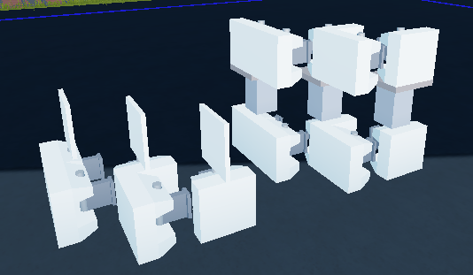
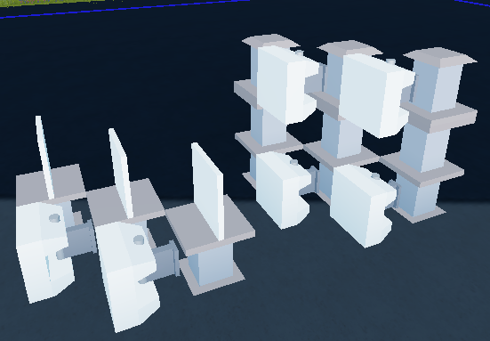
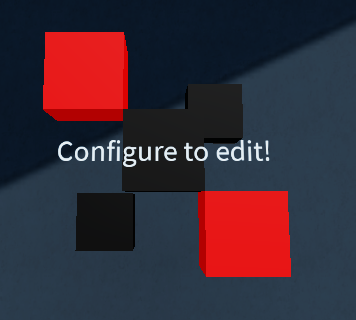
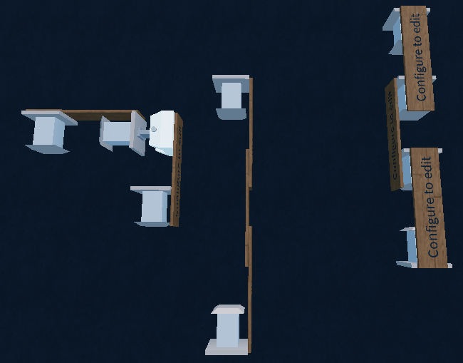
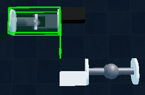
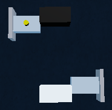
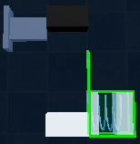
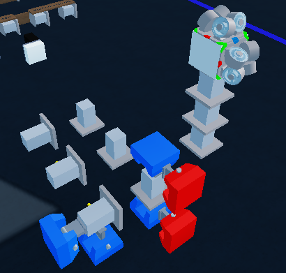

Shredder Optimisation
Optimising your shredder reduces physics lag, lowers overall block counts, and increases server stability—giving you faster rotation speeds and cleaner hits.
Structural Redundancy Skeletons
Building an efficient frame is crucial for keeping node counts low while maintaining structural integrity.


Text Block Connections
Text Blocks are single flat blocks (3x3x1 / 1x3x3) used to join structural sections cleanly without introducing unnecessary block overhead.

- Weld Rules: On the flat face of a Text Block, the bottom-left and top-right corners do not weld to adjacent blocks. Keep this in mind during frame design to avoid accidental detachments.
How to Use Text Blocks for Connections

Place the Text Block flat across two separate frame segments, ensuring the active weld points overlap both sections while avoiding the non-welding bottom-left and top-right corners.
Compressors vs. Angle Locks
Compressors are significantly more code-optimized than Angle Locks in Plane Crazy's engine.
- 0-Angle Replacement: If you have an Angle Lock set to an angle of
0, replace it with a Compressor set to0distance. - Performance Ratio: In terms of server performance, 1 Compressor is roughly equal to 2 Angle Locks (1 Compressor ≈ 2 Angle Locks).
Zipper Locking Tech
Zipper Locking is an advanced technique where you use the Move Tool to physically shift a block so its thin part or attachment point touches two adjacent blocks simultaneously, compressing them together to save block count.
Note: You must re-zipper your build every time you load the save slot for the compression to take effect.
Zipper Blocks & Rotations



Zipper Examples

Clearance & Collision Prevention
Ensure that the pushing, pulling, or rotating parts of Angle Locks and Compressors do not make physical contact with surrounding blocks unless explicitly required. Phantom touching or clipping between moving mechanical parts causes micro-stutters and severe physics lag when rotating at high speeds.
+1 Compressor Configurations
Utilize "+1" Compressor setups (nesting or stacking internal rows) to compress multiple segments using fewer total mechanical parts, saving space and drastically cutting down overall block counts.